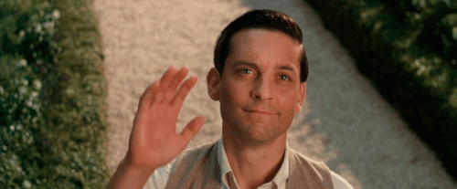
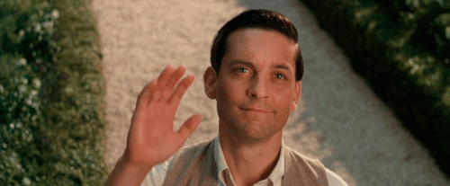

New Character Introduced: Nick Carraway
Nick Carraway, a recent arrival to New York, enters the city with a positive attitude and a sense of excitement for his new job in the bond business. As he settles into his modest home in West Egg, Nick's approach to life seems open-minded, eager to explore the opportunities ahead of him. His outlook is shaped by a sense of optimism, as he steps into this new chapter of his life, eager to experience the world of finance and the fast-paced lifestyle of the city.
If you would like a deeper analysis of this chapter, check out this link:
Click Here for Sparknotes! 

Why this song? The lyrics reflect Nick's hopeful mindset as he enters a new phase of life. “There ain't a cloud in sight, it stopped raining” represents his positive outlook, and “It's a beautiful new day” symbolizes a fresh start.
“I decided to go East and learn the bond business. Everyone I knew was in the bond business, so I suppose it could support one more single man."
—F. Scott Fitzgerald, The Great Gatsby
“Sun is shining in the sky, there ain't a cloud in sight. It stopped raining, everyone's in a play, and don't you know, it's a beautiful new day.”
—Electric Light Orchestra